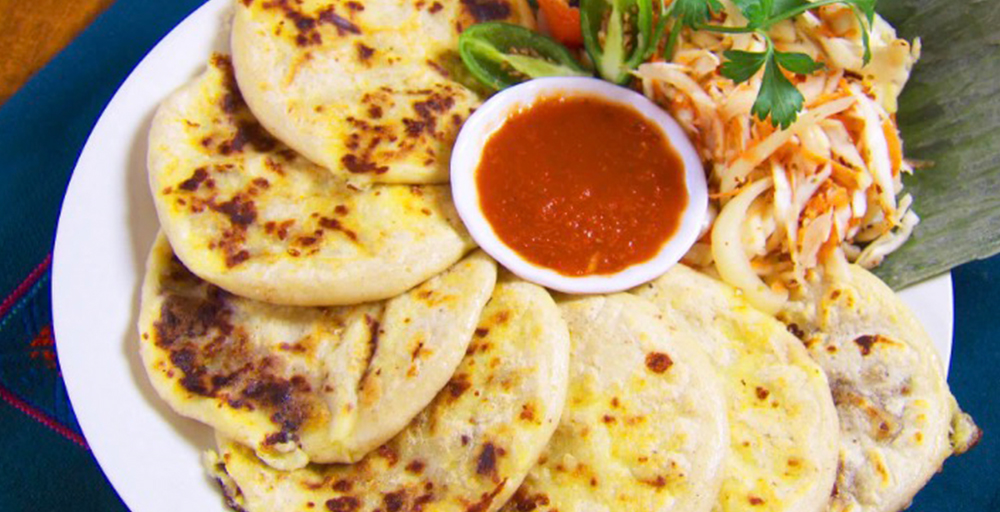
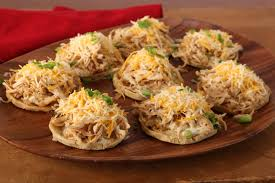
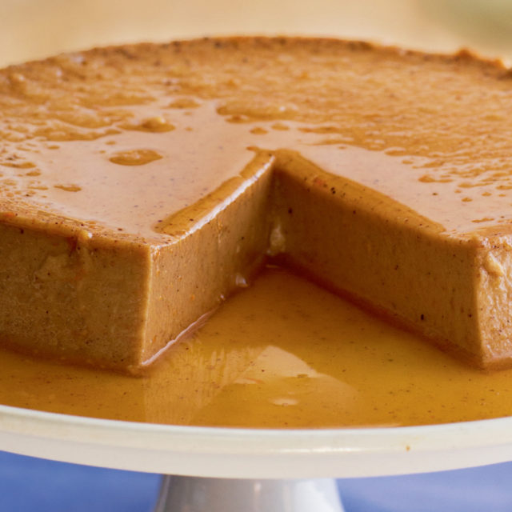

Here at Casa de Raices Pupuseria y Taqueria, we serve a delicious spread
of traditional , you guessed it...
pupusas, tacos, sopes and more! All our ingredients are farm-to-table and
free-trade certified! Come on in and try our delicious Mexican and Salvadorean cuisines.
We'll make sure you leave satisfied.
Pupusas

All pupusas come with curtido, a classic cole slaw native to El Salvador.
Pupusas de Queso Classic cheese pupusas 3 for $5
Pupusas de Frijol y Queso Pupusas stuffed with Cheese & Beans 3 for $6.50
Pupusas Revueltas Pupusas stuffed with shredded pork, cheese and beans. 3 for $7.50
Pupusas de Queso y Loroco Classic cheese pupusas with Loroco 3 for $5.50
Tacos
All Tacos are 3 for $4.50.
Tacos de Cabeza Classic Beef Tacos
Tacos de Lengua Beef Tounge Tacos
Tacos de Tripa Beef Intestine Tacos
Tacos Al Pastor Pork Tacos
Sopes

All Sopes are 3 for $5
Sopes de Frijol y Queso Original sopes with Cheese & Beans
Sopes de Carne Asada Classic sopes with carne asada, beans and cheese
Sopes Al Pastor Classic sopes with pork meat, beans and cheese
Desserts

Flan Classic Flan $4
Fried Ice Cream A scoop of vanilla Ice cream deep fried and encased by cinnamon pastry $5